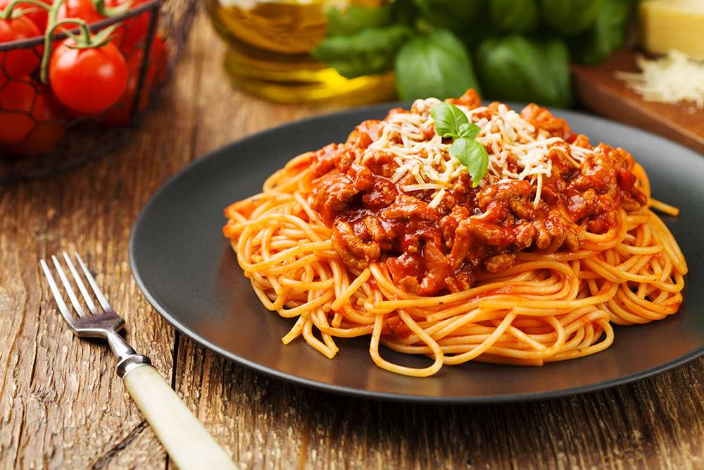

1 sibul
2 küüslauguküünt
400g purustatud tomateid
1 tl kuivatatud basiilikut
Sool ja pipar maitse järgi
300g pastat
Riivitud parmesani juust serveerimiseks
Pane pasta keema.
Lisa hakitud sibul ja küüslauk pannile ning prae, kuni need on pehmed.
Lisa purustatud tomatid ja kuivatatud basiilik, maitsesta soola ja pipraga. Keeda madalal kuumusel umbes 10 minutit.
Sega valmis kaste keedetud pasta hulka.
Serveeri riivitud parmesani juustuga.
Nautige maitsvat Pasta Bologneset!
Hind: 7 eurot | Portsjonid: 3 | Hind portsjoni kohta: 2.33eur | Valmistusaeg: 40min
Koostisosad:
400g hakkliha1 sibul
2 küüslauguküünt
400g purustatud tomateid
1 tl kuivatatud basiilikut
Sool ja pipar maitse järgi
300g pastat
Riivitud parmesani juust serveerimiseks
Valmistamise juhised:
Kuumuta pannil õli ja prae hakkliha kuni see on pruunistunud.Pane pasta keema.
Lisa hakitud sibul ja küüslauk pannile ning prae, kuni need on pehmed.
Lisa purustatud tomatid ja kuivatatud basiilik, maitsesta soola ja pipraga. Keeda madalal kuumusel umbes 10 minutit.
Sega valmis kaste keedetud pasta hulka.
Serveeri riivitud parmesani juustuga.
Nautige maitsvat Pasta Bologneset!